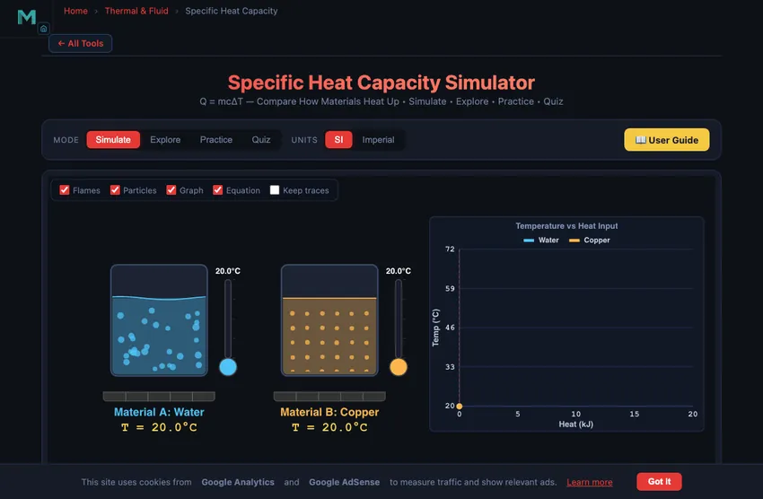

Specific Heat Capacity Table & Calculator
Q = mcΔT — Compare How Materials Heat Up • Simulate • Explore • Practice • Quiz
Display Controls
Q = mcΔT Calculator — Solve for Any Variable
Enter any three values and leave the fourth blank — it will be solved for you.
Σ Live equations — values substituted from current state
⚖ Material comparison — ΔT for current Q and m
💡 What-if coach — insights from current values
1 Overview
The Specific Heat Capacity Simulator lets you visually compare how different materials respond to the same heat energy input, using the fundamental equation Q = mcΔT. Two containers are heated side by side with animated flames, and the temperature rise of each material is tracked in real time through thermometers, temperature graphs, and numerical readouts. Materials with low specific heat capacity (like copper at 385 J/kg·K) heat up quickly, while those with high capacity (like water at 4186 J/kg·K) absorb much more energy before their temperature rises noticeably.
This simulator is designed for engineering and physics students learning about heat energy, calorimetry, and thermal properties of materials. It supports six materials (Water, Aluminium, Copper, Iron, Oil, and Glass) and provides hands-on comparison that makes the abstract concept of specific heat tangible and intuitive. Four modes cover simulation, concept exploration, practice problems, and quizzes.
2 Configuring the System
The simulator opens in Simulate mode with Material A set to Water (4186 J/kg·K) and Material B set to Copper (385 J/kg·K). The default heat input is 10.0 kJ with a mass of 1.0 kg for both materials. The canvas shows two containers with animated flames, thermometers, and temperature indicators. Below, the readout cards display the temperature of each material, the temperature change ΔT for each, the total heat added, and the governing formula ΔT = Q/(mc).
To start exploring, adjust the Heat Input (Q) slider from 0 to 50 kJ and watch how the two materials respond differently. Increase the heat and notice that Copper's temperature rises much faster than Water's — at 10 kJ with 1 kg, Copper reaches about 46 °C above ambient while Water only rises about 2.4 °C. You can also change the Mass (m) slider to see how doubling the mass halves the temperature change for the same heat input.
3 Running the Cycle
The canvas renders two containers with animated flames whose intensity reflects the heat input level. Thermometers on each container show the current temperature, with the liquid column rising as heat is added. The temperature graph plots both materials' temperatures against heat input, clearly showing the different slopes — steeper for low specific heat materials, shallower for high specific heat materials.
Use the Material A and Material B dropdowns to select any pair from the six available materials. Try comparing Water (c = 4186) with Iron (c = 449) to see nearly a 10-fold difference in temperature rise. Then compare Aluminium (c = 897) with Copper (c = 385) for a more subtle distinction. The readout cards update instantly: Material A Temp, Material B Temp, ΔT (A), ΔT (B), Heat Added, and the formula. This side-by-side comparison builds deep intuition about why material selection matters in thermal design.
4 The Underlying Theory
Switch to Explore mode to browse concept cards across four categories: Heat & Energy, Specific Heat, Thermal Properties, and Applications. Heat & Energy covers the distinction between heat and temperature, the joule as a unit of energy, and how heat energy transfers between objects at different temperatures.
The Specific Heat category explains the Q = mcΔT formula and its rearrangements, why water has an exceptionally high specific heat (hydrogen bonding), and how calorimetry experiments measure unknown specific heats by mixing materials at different temperatures. Thermal Properties covers thermal conductivity versus specific heat, thermal diffusivity, and how these properties combine in transient heating. Applications includes engine cooling systems, thermal energy storage, food processing, electronics heat sinks, and building thermal mass. Each card has formulas, material comparison tables, and worked examples.
5 Try a Problem
Practice mode generates randomised problems using Q = mcΔT. You might be asked to find the heat energy needed to raise 2 kg of aluminium by 50 °C, determine the specific heat of an unknown material from experimental data, calculate the final temperature when two materials at different temperatures are mixed, or find the mass of water that absorbs a given amount of energy. Enter your answer and click Check, or use Show Solution for a full step-by-step walkthrough.
Quiz mode presents five questions per session mixing conceptual and numerical problems. Topics include ranking materials by how fast they heat up, identifying which material requires the most energy for a given temperature change, solving Q = mcΔT for any unknown variable, and understanding why water is used as a coolant. After completing the quiz, review your performance and revisit weak areas in Explore mode.
6 New Features & Power Tools
Units (SI / Imperial): Toggle the top-right pill to switch every readout, slider label, canvas axis, and calculation-modal line between SI (kJ, kg, °C, J/(kg·K)) and Imperial (BTU, lb, °F, BTU/(lb·°F)). Calculations stay SI-internal, so accuracy is preserved across conversions.
Presets: Six one-click scenarios above the material selectors: Default, Metals Race, Oil vs Water, Coolant Comparison, Cookware, and Climate Mass. Each sets materials, mass, and heat input for a ready-made lesson.
Custom material: Click + Custom next to the material dropdowns to add your own material with a user-defined specific heat. Validated against a realistic 50–20 000 J/(kg·K) range.
Stepper inputs: The −/+ buttons beside each slider let you nudge heat and mass by exact steps; typing a precise value is also allowed.
Action bar: Press 🔥 Simulate to play a 6-second time-based heating animation — flames burn under both containers, particles speed up as their material warms, thermometers rise, and the temperature–vs–heat graph draws progressively so you can see which material heats faster in real time. Stop pauses, Reset clears results, Undo / Redo step through your last changes (Ctrl+Z / Ctrl+Shift+Z).
Canvas toggles: Top-left overlay checkboxes let you hide/show Flames, Particles, Graph, Equation, and Grid on the canvas — useful for focused screenshots or reducing visual load.
Show Calculations (🔢 FAB): The calculator button at the top-right of the canvas opens a step-by-step derivation modal showing every substitution and arithmetic step for both materials — the exact work a student would show on paper.
Learning panels: Below the readouts, three collapsible cards (Equations & derivation, Compare materials, Coach tips) provide always-visible reference material that updates with your current inputs.
Export: CSV saves the current temperature-vs-heat dataset; PNG saves a labelled snapshot of the canvas. Access the same actions plus Copy Material A / B via right-click on the canvas.
7 Tips & Best Practices
- The equation Q = mcΔT assumes no phase change. If the material reaches its melting or boiling point, additional latent heat must be considered separately.
- Remember that ΔT in Celsius equals ΔT in Kelvin — you do not need to convert temperature differences between the two scales.
- Water's specific heat (4186 J/kg·K) is roughly 10 times that of most metals. This is why water is the preferred coolant in engines, data centres, and industrial processes.
- In calorimetry problems, heat lost by the hot object equals heat gained by the cold object: m1c1ΔT1 = m2c2ΔT2. This conservation principle is the basis for measuring unknown specific heats.
- Use the mass slider to verify that doubling the mass at the same heat input halves the temperature rise. This linear relationship is a key feature of the Q = mcΔT equation.
- Pair this simulator with the Heat Transfer Simulator and the Thermal Expansion Calculator to see how thermal properties affect both energy transfer rates and dimensional changes.
Understanding Specific Heat Capacity and Q = mcΔT

Specific heat capacity (c) is the heat energy required to raise 1 kg of a substance by 1 K, measured in J/(kg·K). It governs the equation Q = mcΔT, linking heat, mass, material, and temperature change in calorimetry and thermal design.
Specific Heat Capacity Table — c Values for Common Materials
Specific heat capacity c at room temperature and atmospheric pressure unless noted. The ΔT column shows how much 1 kg of each material warms when it absorbs 10 kJ — a quick way to see why water is such an effective coolant. Type to filter by material or category.
| Category | Material | c J/(kg·K) | c BTU/(lb·°F) | ΔT °C per 10 kJ/kg | Typical use / note |
|---|---|---|---|---|---|
| Liquids | Ammonia (liquid) | 4700 | 1.123 | 2.1 | Refrigerant R-717 |
| Liquids | Water (0 °C) | 4218 | 1.008 | 2.4 | Rises slightly near freezing |
| Liquids | Water (25 °C) | 4186 | 1.000 | 2.4 | Reference — highest of common liquids |
| Liquids | Seawater (35 PSU) | 3993 | 0.954 | 2.5 | Salinity lowers c |
| Liquids | Methanol | 2510 | 0.600 | 4.0 | Solvent |
| Liquids | Ethanol | 2440 | 0.583 | 4.1 | Solvent, biofuel |
| Liquids | Glycerol | 2430 | 0.581 | 4.1 | Humectant |
| Liquids | Ethylene glycol | 2400 | 0.573 | 4.2 | Antifreeze base |
| Liquids | Acetone | 2160 | 0.516 | 4.6 | Solvent |
| Liquids | Kerosene | 2010 | 0.480 | 5.0 | Fuel |
| Liquids | Olive oil | 1970 | 0.471 | 5.1 | Cooking |
| Liquids | Engine oil (SAE 30) | 1880 | 0.449 | 5.3 | Lubricant, heat carrier |
| Liquids | Benzene | 1740 | 0.416 | 5.7 | Solvent |
| Liquids | Mercury | 140 | 0.033 | 71.4 | Lowest c of common liquids |
| Metals | Magnesium | 1023 | 0.244 | 9.8 | Lightweight alloys |
| Metals | Aluminium | 897 | 0.214 | 11.1 | Heat sinks, cookware |
| Metals | Titanium | 523 | 0.125 | 19.1 | Aerospace |
| Metals | Stainless steel (304) | 500 | 0.119 | 20.0 | Corrosion resistant |
| Metals | Carbon steel (mild) | 490 | 0.117 | 20.4 | Structural |
| Metals | Cast iron | 460 | 0.110 | 21.7 | Castings, engine blocks |
| Metals | Iron | 449 | 0.107 | 22.3 | Pure element |
| Metals | Nickel | 444 | 0.106 | 22.5 | Superalloys |
| Metals | Zinc | 388 | 0.093 | 25.8 | Galvanising |
| Metals | Copper | 385 | 0.092 | 26.0 | Wiring, heat exchangers |
| Metals | Brass | 380 | 0.091 | 26.3 | Fittings |
| Metals | Bronze | 380 | 0.091 | 26.3 | Bearings |
| Metals | Silver | 235 | 0.056 | 42.6 | Best thermal conductor |
| Metals | Tin | 228 | 0.054 | 43.9 | Solder |
| Metals | Tungsten | 134 | 0.032 | 74.6 | Filaments, tooling |
| Metals | Platinum | 133 | 0.032 | 75.2 | Catalysts, RTDs |
| Metals | Lead | 129 | 0.031 | 77.5 | Shielding |
| Metals | Gold | 129 | 0.031 | 77.5 | Contacts |
| Gases (cₚ) | Hydrogen | 14300 | 3.416 | 0.7 | Highest c of any substance |
| Gases (cₚ) | Helium | 5193 | 1.241 | 1.9 | Cryogenics |
| Gases (cₚ) | Methane | 2220 | 0.530 | 4.5 | Natural gas |
| Gases (cₚ) | Steam (water vapour, 100 °C) | 2010 | 0.480 | 5.0 | Note: not the same as liquid water |
| Gases (cₚ) | Nitrogen | 1040 | 0.248 | 9.6 | 78% of air |
| Gases (cₚ) | Air (dry, 25 °C) | 1005 | 0.240 | 10.0 | HVAC reference |
| Gases (cₚ) | Oxygen | 918 | 0.219 | 10.9 | 21% of air |
| Gases (cₚ) | Carbon dioxide | 844 | 0.202 | 11.8 | Combustion product |
| Gases (cₚ) | Argon | 520 | 0.124 | 19.2 | Shielding gas |
| Non-metals & building | Polyethylene | 2300 | 0.549 | 4.3 | Packaging, pipe |
| Non-metals & building | Ice (0 °C) | 2090 | 0.499 | 4.8 | About half of liquid water |
| Non-metals & building | Nylon | 1700 | 0.406 | 5.9 | Gears, bearings |
| Non-metals & building | Wood (oak, dry) | 1700 | 0.406 | 5.9 | Varies 1200–2300 with moisture |
| Non-metals & building | Rubber (vulcanised) | 1600 | 0.382 | 6.2 | Seals, tyres |
| Non-metals & building | Paper | 1400 | 0.334 | 7.1 | |
| Non-metals & building | Asphalt | 920 | 0.220 | 10.9 | Road surfacing |
| Non-metals & building | PVC | 900 | 0.215 | 11.1 | Pipe, conduit |
| Non-metals & building | Marble | 880 | 0.210 | 11.4 | Cladding |
| Non-metals & building | Concrete | 880 | 0.210 | 11.4 | Thermal mass |
| Non-metals & building | Brick | 840 | 0.201 | 11.9 | Thermal mass |
| Non-metals & building | Glass | 840 | 0.201 | 11.9 | Glazing |
| Non-metals & building | Sand (dry) | 830 | 0.198 | 12.0 | |
| Non-metals & building | Soil (dry) | 800 | 0.191 | 12.5 | |
| Non-metals & building | Granite | 790 | 0.189 | 12.7 | Thermal mass |
| Biological & food | Milk | 3930 | 0.939 | 2.5 | |
| Biological & food | Human body (average) | 3470 | 0.829 | 2.9 | Mostly water |
Values are typical published figures at about 25 °C and 1 atm; c varies with temperature (and, for gases, with whether the process is at constant pressure or constant volume — gas values here are cₚ). Alloys, woods and soils vary with composition and moisture, so treat those as representative rather than exact. Note that BTU/(lb·°F) is numerically equal to cal/(g·°C), which is why water is exactly 1.00 in both.
Specific Heat of Common Engineering Materials
The fundamental equation Q = mcΔT links heat energy transfer (Q, joules), mass (m, kilograms), specific heat capacity (c), and temperature change (ΔT) across virtually every branch of engineering thermodynamics. Different materials have vastly different specific heat capacities. Water stands out with a remarkably high value of 4186 J/(kg·K), meaning it can absorb a large amount of heat energy before its temperature rises significantly. In contrast, metals like copper (385 J/(kg·K)) and iron (449 J/(kg·K)) heat up much more quickly for the same amount of energy input. This is why metals feel hot much faster than water when both are exposed to the same heat source. The simulator above lets you compare two materials side by side, watching how their temperatures rise differently when supplied with the same amount of heat energy.
The Q = mcΔT Formula Explained
The equation Q = mcΔT can be rearranged to solve for any variable. To find the temperature change: ΔT = Q / (mc). To find the required heat energy: Q = mcΔT. To find the specific heat capacity from experimental data: c = Q / (mΔT). To find the mass: m = Q / (cΔT). Engineers use these rearrangements daily when designing heating systems, sizing heat exchangers, calculating insulation requirements, and predicting thermal behavior of components under load. The formula assumes no phase change occurs during the heating process. If the material reaches its melting or boiling point, additional energy (latent heat) must be considered.
Why Water Has an Exceptionally High Specific Heat
Water's high specific heat capacity is due to its molecular structure. Water molecules form extensive hydrogen bond networks, and a significant amount of the input energy goes into breaking these bonds rather than increasing the kinetic energy (temperature) of the molecules. This makes water an exceptional coolant and thermal buffer. In automotive engines, water-based coolants absorb waste heat efficiently. Coastal cities experience moderate climates because nearby oceans absorb and release vast amounts of thermal energy without large temperature swings. In industrial heating systems and power plants, water is the primary heat transfer medium precisely because of this property.
Engineering Applications of Specific Heat
Specific heat capacity plays a critical role in many engineering systems. Engine cooling systems rely on water's high specific heat to carry away combustion heat. Thermal energy storage systems use materials with high specific heat (or high thermal mass) to store energy for later use. In food processing, understanding the specific heat of oils, water, and other ingredients is essential for designing cooking and pasteurization equipment. Electronics cooling uses materials with known specific heats to design heat sinks and thermal management solutions. Even in building construction, the thermal mass of concrete and brick helps regulate indoor temperatures by absorbing excess heat during the day and releasing it at night.
Heating a Domestic Hot-Water Tank — A Worked Example
How long does an electric immersion heater take to heat 200 litres of water from 10 to 60 °C? A typical immersion is rated 3 kW.
| Step | Working | Result |
|---|---|---|
| Mass of water | m = 200 L × 1 kg/L | 200 kg |
| Required heat | Q = mcΔT = 200 × 4186 × 50 | 41.86 MJ |
| Heating time at 3 kW | t = Q/P = 41,860,000/3000 | 13,953 s |
| In more sensible units | 13,953/3600 | 3.88 hours |
| If the tank had losses (typical ~5%) | add ~12 minutes | ~4 hours total |
Approximately 4 hours for a full reheat. This is why domestic hot-water timers run overnight (cheap electricity, full tank ready by morning). And why a gas combi boiler with no tank is so much more convenient for instant hot water — it heats only what you need, when you need it.
Calorimeter Design — How You Actually Measure c
The textbook formula assumes you know Q, but in practice you have to measure it. A bomb calorimeter (for fuels) and a coffee-cup calorimeter (for student labs) both work the same way: known mass of water, insulated container, sample of unknown material at known initial temperature, mix and let equilibrate, measure final temperature. Conservation of energy gives:
msample·csample·(Tsample−Tfinal) = mwater·cwater·(Tfinal−Twater)
Solve for csample. Real precision requires accounting for the calorimeter cup’s heat capacity, evaporation losses, and stirring work. A well-designed laboratory calorimeter measures specific heat to about 1 % accuracy; a coffee-cup version is good to about 5 %.
Why Water Has Such a High c — The Hydrogen-Bond Explanation
Water’s 4186 J/(kg·K) is roughly an order of magnitude larger than most metals. The reason is molecular structure. H2O molecules form extensive hydrogen-bond networks; raising the temperature requires energy not only to increase molecular kinetic energy (the “temperature” you measure) but also to partially break those hydrogen bonds. Water gets a free thermal buffer that solid metals do not.
This is why oceans moderate coastal climate, why water is the standard coolant for engines and power plants, and why phase-change materials (which exploit even bigger latent heats) are now used in advanced thermal storage systems. The molecular structure does the work.
References
- Cengel, Y. A. & Boles, M. A. — Thermodynamics: An Engineering Approach, 9th ed., Chapter 4 (Energy Analysis).
- NIST Webbook — Thermophysical Properties of Fluid Systems. The reference source for accurate c values across all common engineering materials.
Explore Related Simulators
If you found this specific heat capacity simulator helpful, explore our Ideal Gas Law Simulator, Boyle's Law Simulator, Charles's Law Simulator, Thermal Expansion Simulator, and Heat Transfer Simulator for more hands-on practice.
Enter a positive value. Typical range: 100–5000 J/(kg·K).